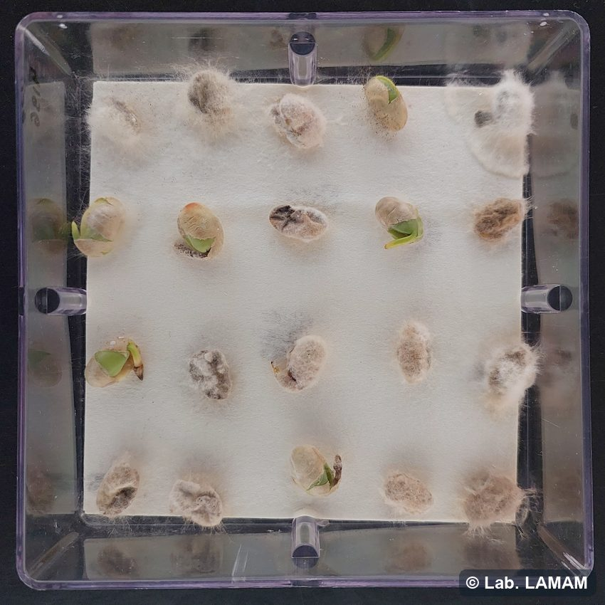
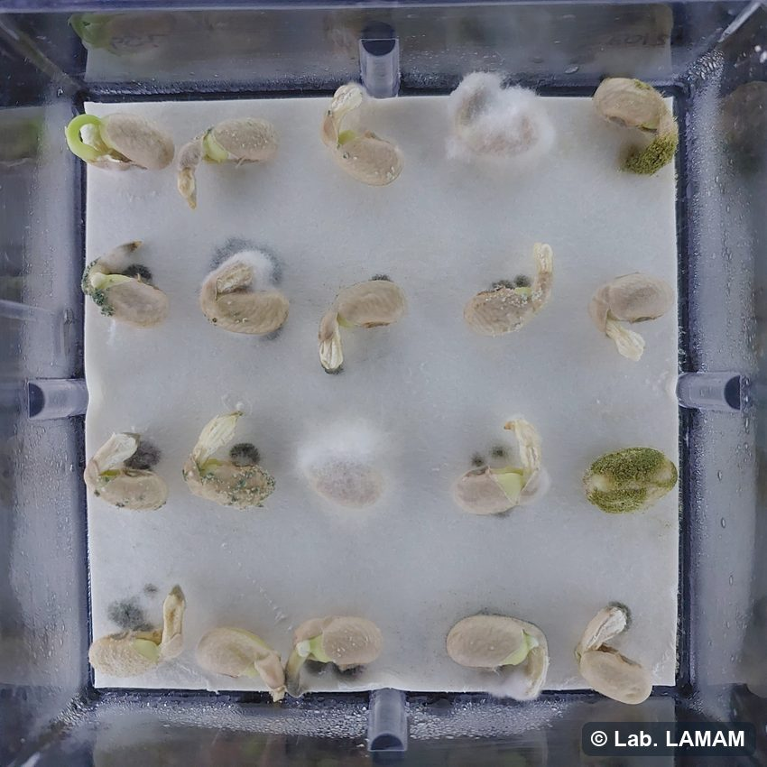
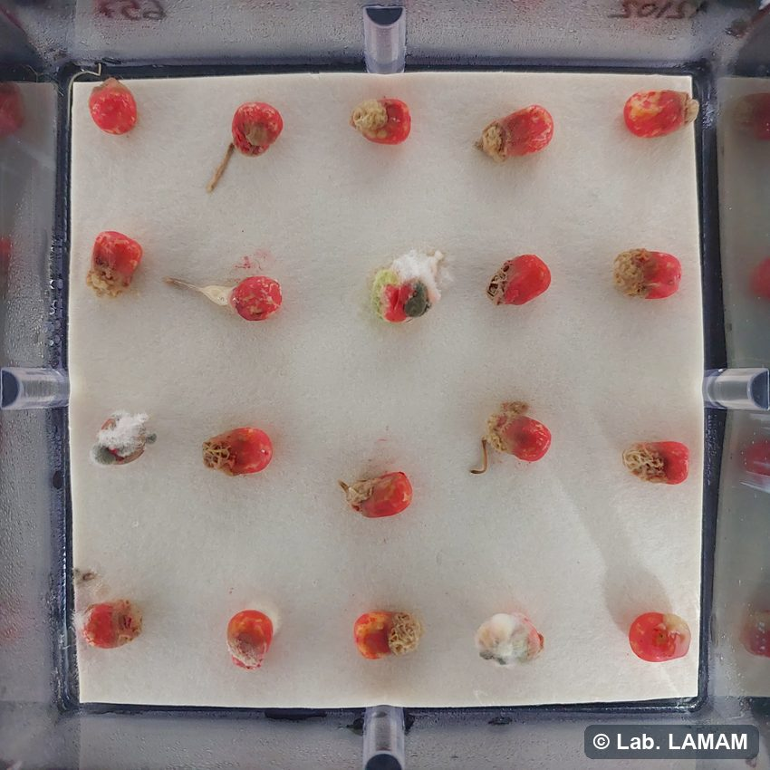
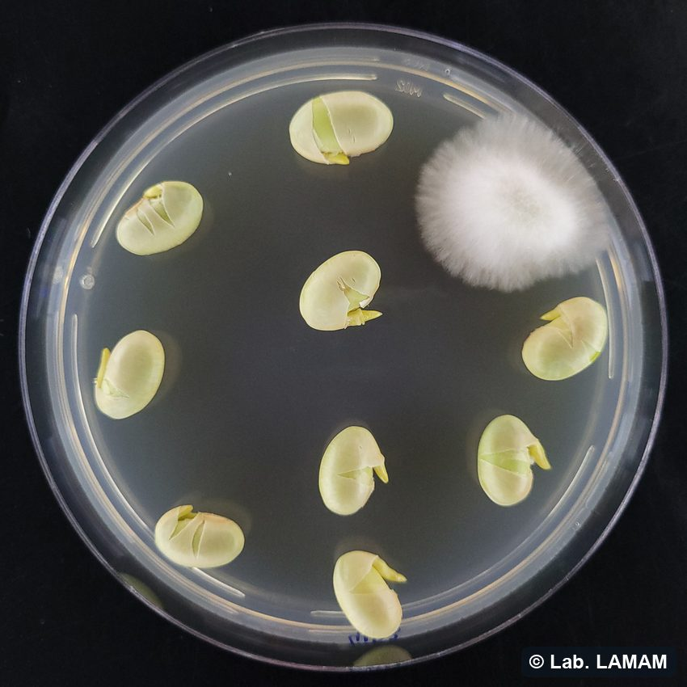
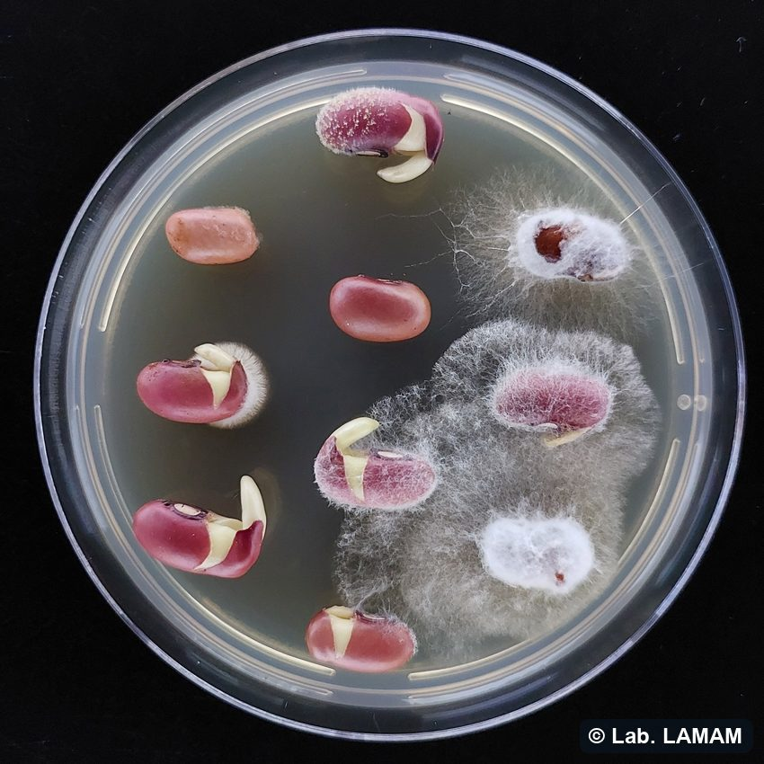
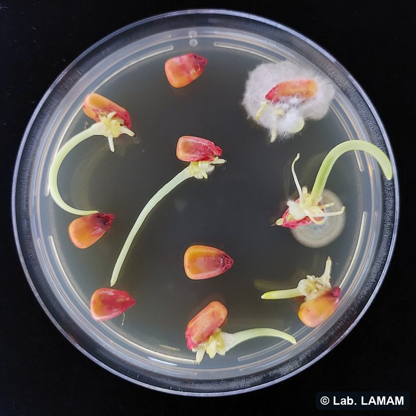
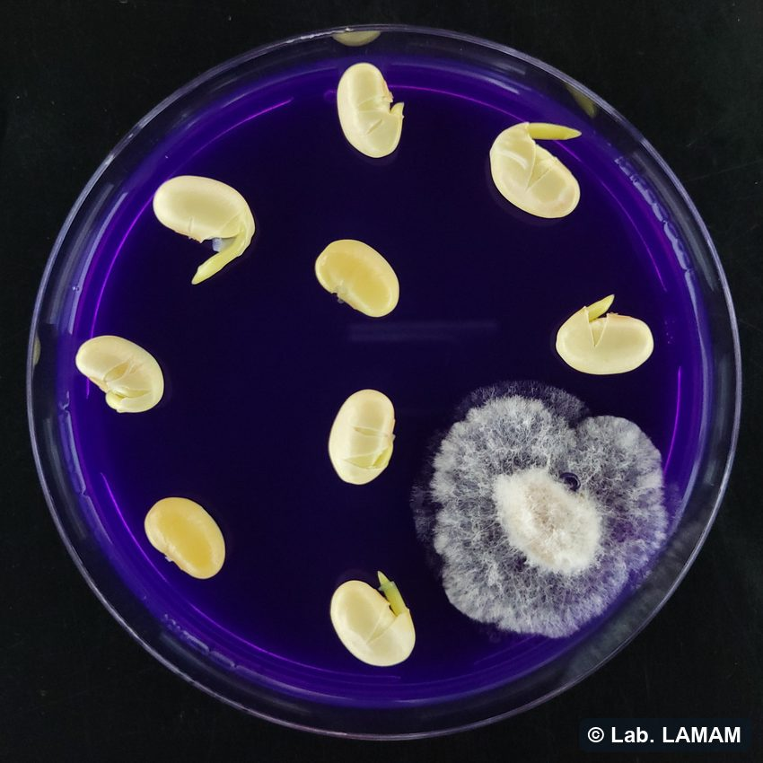
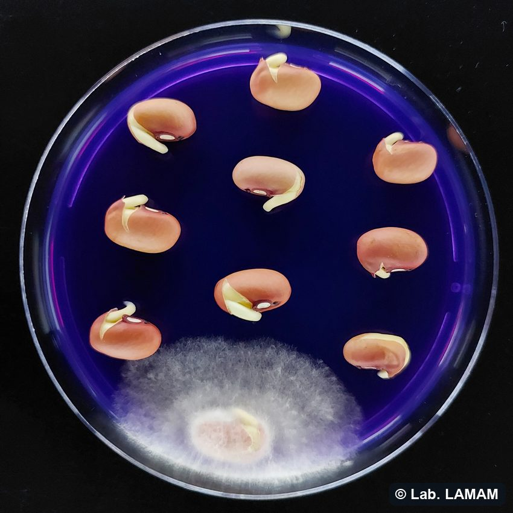
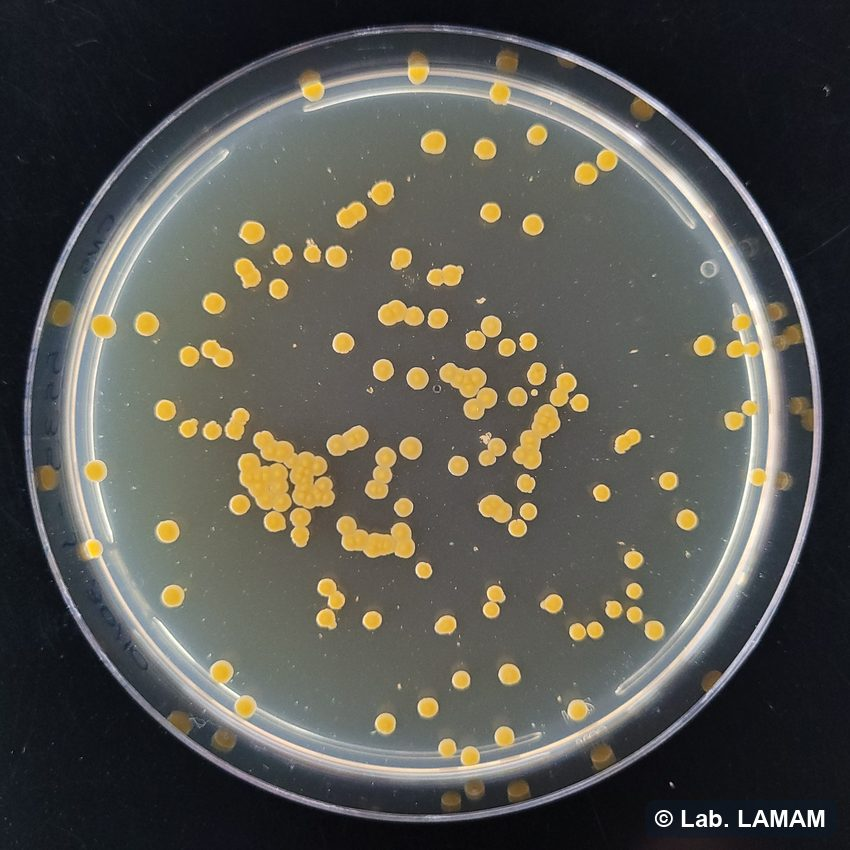
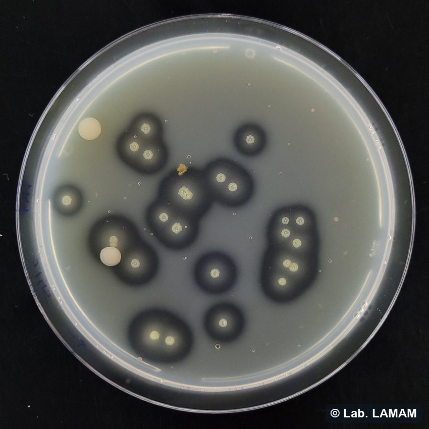

Como entender o laudo de sanidade, o que cada teste do laboratório mostra, os padrões oficiais e por que a análise importa — referência para a leitura do resultado.
No teste de Blotter (papel de filtro em caixa gerbox), as sementes são incubadas por 10 a 14 dias (20–25 °C, com alternância de luz e escuro) e depois avaliadas em lupa e microscópio. É um levantamento amplo: revela os fungos associados à semente — em geral os patógenos que a estão infestando, ou seja, presentes na superfície ou junto ao tegumento. O resultado é a incidência (%) de cada fungo.



Aqui as sementes passam antes por assepsia (desinfestação superficial) e só então são plaqueadas em meio BDA (batata-dextrose-ágar). A assepsia elimina a microbiota da superfície, de modo que o que cresce vem de dentro da semente: são os patógenos que a estão infectando, já estabelecidos no tecido. O resultado também sai em incidência (%).



Além do levantamento geral (Blotter e BDA), há métodos específicos, dirigidos a patógenos determinados, também realizados na rotina. Abaixo, os mais comuns:
NEON (meio Ágar-bromofenol) — meio semi-seletivo usado na detecção de Sclerotinia sclerotiorum (mofo branco), patógeno PNQR de tolerância zero (ver seção 2). É realizado para soja, feijão e girassol. As sementes são incubadas sobre o meio e o resultado é registrado como ausência ou presença.


CNS e MT (meios semi-seletivos para bactérias) — faz-se a lavagem das sementes e a suspensão é plaqueada, em diluições. Cada meio favorece a sua bactéria-alvo: CNS → Curtobacterium flaccumfaciens pv. flaccumfaciens (murcha-de-curtobacterium), realizado para soja e feijão; MT (Milk-Tween) → Xanthomonas axonopodis pv. phaseoli (crestamento bacteriano comum), realizado apenas para feijão. O resultado sai em ausência ou presença e também pode ser quantitativo (contagem de colônias em UFC).


Rolo de papel — as sementes são incubadas em rolo de papel úmido, combinando a avaliação da germinação com a observação de sintomas na plântula (lesões e tombamento, o damping-off) — evidenciando a transmissão do patógeno da semente para a plântula. É um dos métodos indicados para a detecção de Colletotrichum lindemuthianum (antracnose do feijão). O resultado é quantitativo (percentual de plântulas afetadas).
| Cultura | Praga (PNQR) | Doença ou estrutura avaliada | Tolerância |
|---|---|---|---|
| Algodão | Fusarium oxysporum f.sp. vasinfectum | Murcha de Fusário | 0/lote |
| Colletotrichum gossypii var. cephalosporioides | Ramulose | 0/lote | |
| Xanthomonas axonopodis pv. malvacearum | Mancha angular | 0/campo | |
| Sclerotinia sclerotiorum ** | Mofo branco | 0/lote | |
| Arroz (sequeiro) | Pyricularia grisea | Brusone | 5/lote |
| Bipolaris oryzae | Mancha parda | 5/lote | |
| Trigo | Bipolaris sorokiniana | Mancha marrom ou podridão comum da raiz | 5/lote |
| Stagonospora nodorum | Mancha da gluma | 1/lote | |
| Drechslera tritici-repentis | Mancha amarela | 5/lote | |
| Xanthomonas campestris pv. undulosa | Estria bacteriana | 1.000 UFC*/3.000 sementes | |
| Feijão | Colletotrichum lindemuthianum | Antracnose | 0/lote |
| Xanthomonas axonopodis pv. phaseoli | Crestamento bacteriano comum | 0/lote | |
| Sclerotinia sclerotiorum ** | Mofo branco | 0/lote | |
| Fusarium oxysporum f.sp. phaseoli | Murcha de Fusário | 0/lote | |
| Fusarium solani f.sp. phaseoli | Podridão radicular seca | 0/lote | |
| Soja | Sclerotinia sclerotiorum ** | Mofo branco | 0/lote |
| Heterodera glycines *** | Nematoide de cisto da soja | 0/lote | |
| Girassol | Sclerotinia sclerotiorum ** | Mofo branco | 0/lote |
| Finalidade | O que a análise responde |
|---|---|
| Decidir o uso do lote | Plantar, tratar ou descartar — com base em quais patógenos há e em que incidência. |
| Certificação e comercialização | Verificar a conformidade com os limites de PNQR para a produção e a venda de sementes. |
| Avaliar a eficácia de tratamentos | Comparar a sanidade antes e depois de um tratamento de sementes (produto químico ou biológico) para medir o controle obtido. |
| Escolher o produto certo | Direcionar o princípio ativo mais eficaz para o(s) patógeno(s) efetivamente identificado(s). |
| Diagnosticar falhas de estande | Investigar baixa germinação, tombamento e falhas de emergência com origem na semente. |
| Evitar disseminar patógenos | Impedir que sementes levem patógenos a novas áreas ou regiões produtoras. |
| Cultura — patógeno | Limiar ou dano documentado | Fonte |
|---|---|---|
| Brássicas — podridão negra (Xanthomonas campestris pv. campestris) | Basta 0,01% de sementes infectadas para deflagrar a podridão negra no campo; em mudas transplantadas, o limiar exigido cai para 0,004%. | Schaad, Sitterly & Humaydan (1980); Roberts, Brough & Hunter (2007) |
| Tomate — cancro bacteriano (Clavibacter michiganensis subsp. michiganensis) | De 0,01 a 0,05% de sementes contaminadas já iniciam a epidemia; perdas de até 80% no campo — praga quarentenária na UE. | Chang et al. (1991) e Gitaitis et al. (1991), apud Theodoro & Maringoni (2000); Méndez et al. (2020) |
| Soja — antracnose (Colletotrichum truncatum) | Cerca de 90 kg/ha perdidos a cada 1% de incidência nas vagens (r = −0,85); perdas de 16 a 26% nos EUA, 30 a 50% na Tailândia e até 100% na Índia. | Dias et al. (2016); Backman, Williams & Crawford (1982); Hartman, Sinclair & Rupe (1999) |
| Soja — podridão de sementes (Phomopsis, Diaporthe) | Infecção de até 76% das sementes, com a germinação caindo a 18–97%; o atraso de colheita reduz ~10% o peso e ≥50% a germinação (dano de qualidade fisiológica). | Li et al. (2017); Malvick (1997); Sinclair (1993) |
| Feijão — antracnose (Colletotrichum lindemuthianum) | 70 a 80% das sementes infectadas transmitem a antracnose à plântula, que ainda desenvolve menor sistema radicular. | Rey et al. (2009) |
| Feijão — crestamento bacteriano comum (Xanthomonas axonopodis pv. phaseoli) | Reduções de 10 a 70% na colheita sob ataque natural (no Brasil, sem estimativa nacional consolidada de perdas). | Diaz (2000); Rava & Sartorato (1994) |
| Arroz — brusone (Pyricularia oryzae) | Perda de até 47,8% na massa de grãos sob alta severidade nas panículas; 15 a 44% em condições gerais. | Prabhu et al. (2003); Prabhu, Faria & Carvalho (1986) |
| Algodão — ramulose (Colletotrichum gossypii var. cephalosporioides) | Lavouras com incidência acima de 5% elevam fortemente a infecção das sementes (correlação entre inóculo no campo e nas sementes). | Araújo et al. (2009); Araújo (2008, tese ESALQ/USP) |
| Trigo — mancha marrom ou podridão comum (Bipolaris sorokiniana) | Incidência média de 15,2% nos lotes (99,1% positivos, máx. 60%); o tratamento de sementes controla a transmissão até ~44% de incidência. | Goulart (1998); Forcelini (1992) |
| Milho — podridões (Stenocarpella spp.) | A semente infectada é a principal fonte de inóculo primário; as perdas específicas, porém, ainda não foram quantificadas. | Costa, Cota & Silva (2013); Casa, Reis & Zambolim (2006) |